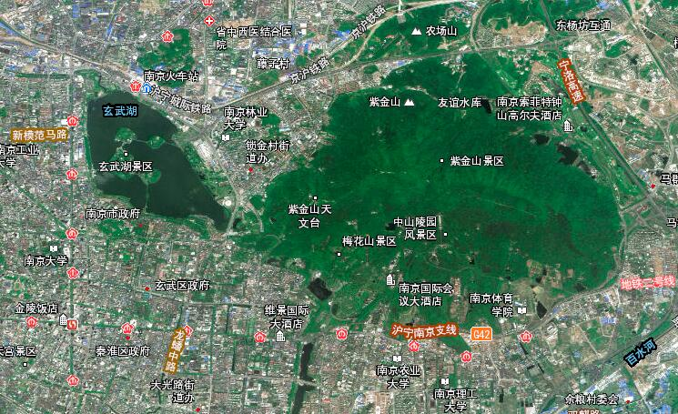
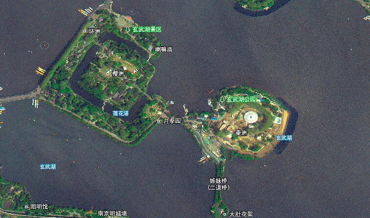
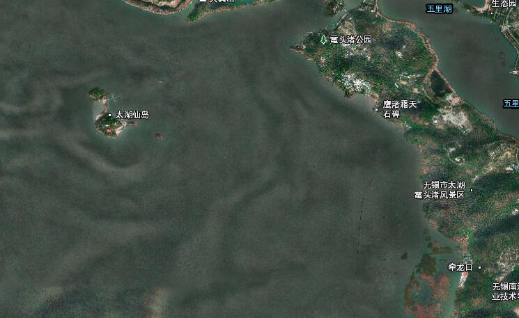

专题监测
江阴市
耕地保护状况监测
专题监测
东台市
耕地利用状况监测
耕地专题
2020
江淮生态大走廊
专题监测
2019
土地执法专题
专题监测
地理空间变化
建筑工地
拆迁平整
耕地
草地
公路
林地
裸露土地
平房
统计信息
系统公告
扬州市江都区2020年第1批次地理空间变化遥感监测报告
2020-04-2 23:06
苏州市太仓市耕地动态变化遥感监测报告
2020-01-2 23:06
无锡市江阴市耕地保护状况遥感监测报告
2019-12-2 23:06
盐城市东台市耕地利用状况遥感监测报告
2019-09-2 23:06
昆山市地理空间变化遥感监测报告
2020-04-2 23:06
卫星遥感影像


